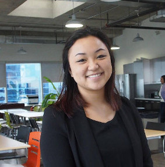
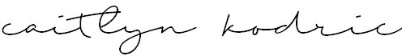

	
	<div class="container">
		<div class="row centered mt mb">
			<div class="col-lg-8 col-lg-offset-2">
				
				
				<br>
				<p class="">I am currently studying Systems Design Engineering at the Univerity of Waterloo. 
					Being in Systems Design I possess a strong passion for technology and design.
					My leadership background over the past few years has taught me strong teamwork skills that I have used to help others. 
					I am able to quickly adapt to new environments and transfer skills from previous experiences. 
					<br>
					<br>
					With the knowledge gained from working and co-op placements, 
					I have become proficient with JavaScript, HTML5, CSS3, C++, and SolidWorks, and am in the process of gaining skills in Java, Python, 
					Arduino, and MATLAB. 
					<br>
					<br>
					If you are seeking a dedicated and enthusiastic individual who has a passion for technology and the environment. <br> ~ Say Hello! </p>
			</div>
		</div><! --/row -->
	</div><! --/container -->